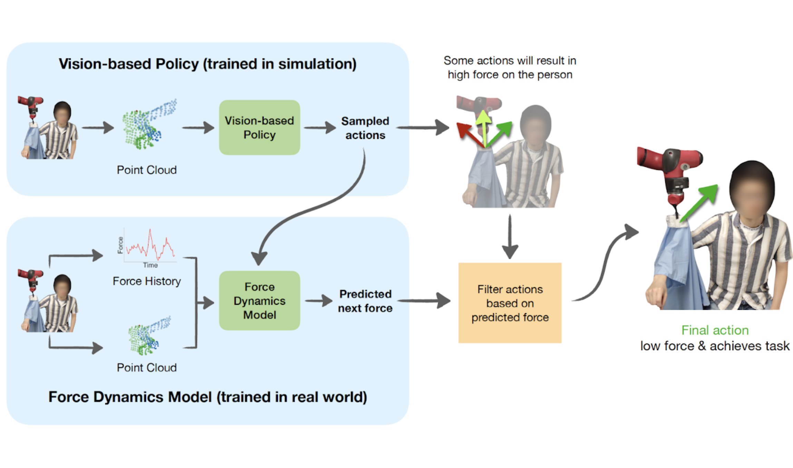
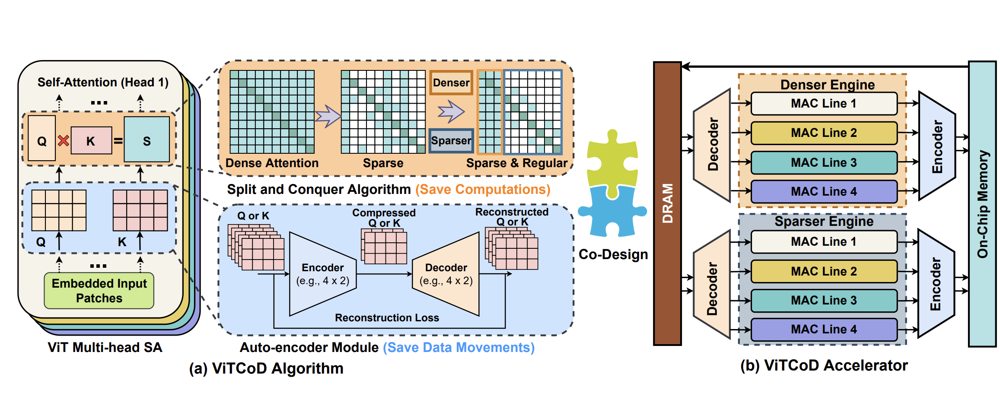
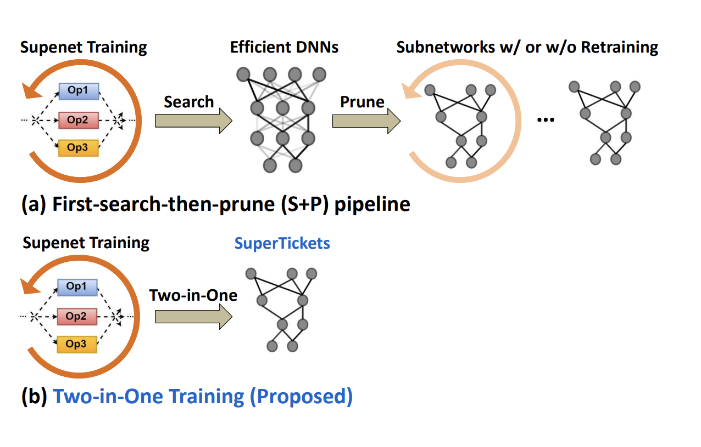

|
Zhanyi Sun I am a second-year Ph.D. student at Stanford University advised by Prof. Shuran Song in the Robotics and Embodied AI (REAL) Lab. Prior to Stanford, I was a MS-Research student in the CMU Robotics Institute, advised by Prof. David Held and Prof. Zackory Erickson. Prior to CMU, I earned my B.A. in Computer Science and B.S. in Electrical Engineering from Rice University. |

|
Research InterestMy research aims to develop robotic systems that achieve human-like intelligence and dexterity and operate in complex and evolving environments with safety, robustness, and trustworthiness. 🤖 |
Preprint |
|
|
From Prior to Pro: Efficient Skill Mastery via Distribution Contractive RL Finetuning
Zhanyi Sun, Shuran Song arXiv, 2026 Website | Paper | Code | Data | Model We introduce Distribution Contractive Reinforcement Learning (DICE-RL), a framework that uses reinforcement learning (RL) as a "distribution contraction" operator to refine pretrained generative robot policies. DICE-RL turns a pretrained behavior prior into a high-performing "pro" policy by amplifying high-success behaviors from online feedback. It enables mastery of complex long-horizon manipulation skills directly from high-dimensional pixel inputs, both in simulation and on a real robot. |
Publications (* indicates equal contribution) |
|
|
Latent Policy Barrier: Learning Robust Visuomotor Policies by Staying In-Distribution
Zhanyi Sun, Shuran Song Conference on Neural Information Processing Systems (NeurIPS), 2025, Spotlight Paper 🎉 Project Page | Paper | Code We introduce Latent Policy Barrier, a framework for robust visuomotor policy learning. LPB treats the latent embeddings of expert demonstrations as an implicit barrier separating safe, in-distribution states from unsafe, out-of-distribution (OOD) ones. Our approach decouples the role of precise expert imitation and OOD recovery into a base diffusion policy and a dynamics model. At inference time, the dynamics model predicts future latent states and optimizes them to stay within the expert distribution. |
|
|
RL-VLM-F: Reinforcement Learning from Vision Language Foundation Model Feedback
Yufei Wang*, Zhanyi Sun*, Jesse Zhang, Xian Zhou, Erdem Bıyık, David Held†, Zackory Erickson† International Conference on Machine Learning (ICML), 2024 Project Page | Paper | Code We introduce a method that automatically generates reward functions for agents to learn new tasks using only a text description of the task goal and the agent’s visual observations, by leveraging feedback from vision language foundation models (VLMs). |
|
 |
Force Constrained Visual Policy: Safe Robot-Assisted Dressing via Multi-Modal Sensing
Zhanyi Sun*, Yufei Wang*, David Held†, Zackory Erickson† IEEE Robotics and Automation Letters (RA-L), 2024 Project Page | Paper We introduce a method that leverages both vision and force modalities for robot-assisted dressing. Our method combines the vision-based policy, trained in simulation, with the force dynamics model, learned in the real world to achieve better dressing performance and safety for the user. |
|
|
One Policy to Dress Them All: Learning to Dress People with Diverse Poses and Garments
Yufei Wang, Zhanyi Sun, Zackory Erickson*, David Held* Robotics: Science and Systems (RSS), 2023 Project Page | Paper | Video | CMU Research Highlights We develop, for the first time, a robot-assisted dressing system that is able to dress different garments on people with diverse body shapes and poses from partial point cloud observations, based on a single reinforcement learning policy. |
|
 |
ViTCoD: Vision transformer acceleration via dedicated algorithm and accelerator co-design
Haoran You, Zhanyi Sun, Huihong Shi, Zhongzhi Yu, Yang Zhao, Yongan Zhang, Chaojian Li, Baopu Li, Yingyan Lin IEEE International Symposium on High-Performance Computer Architecture (HPCA), 2023 Paper | Code | Video We propose a dedicated algorithm and accelerator co-design framework dubbed ViTCoD to accelerate ViTs. On the algorithm level, we prune and polarize the attention maps to have either denser or sparser patterns. On the hardware level, we develop an accelerator to coordinate the denser/sparser workloads for higher hardware utilization. |
|
 |
SuperTickets: Drawing Task-Agnostic Lottery Tickets from Supernets via Jointly Architecture Searching and Parameter Pruning
Haoran You, Baopu Li, Zhanyi Sun, Xu Ouyang, Yingyan Lin European Conference on Computer Vision (ECCV), 2022 Paper | Code | Video We discover for the first time that both efficient DNNs and their lottery subnetworks can be identified from a supernet and propose a two-in-one training scheme with jointly architecture searching and parameter pruning to identify them. |
|
|
Human-guided motion planning in partially observable environments
Carlos Quintero-Pena*, Constantinos Chamzas*, Zhanyi Sun, Vaibhav Unhelkar, Lydia E. Kavraki International Conference on Robotics and Automation (ICRA), 2022 Project Page | Paper | Video | Futurity Research News Review We propose a method that leverages human guidance for high DOF robot motion planning in partial observable environments. We project the robot’s continuous configuration space to a discrete task model and utilize inverse RL to learn motion-level guidance from human critiques. |
Education |
|
Carnegie Mellon University
Master of Science in Robotics (MSR) Aug '22 - Jun '24 Advised by Prof. David Held and Prof. Zackory Erickson. |
|
|
Rice University
B.A. in Computer Science, B.S. in Electrical Engineering Aug '18 - May '22 Advised by Prof. Vaibhav Unhelkar, Prof. Lydia E. Kavraki, and Prof. Yingyan (Celine) Lin. |
|
Website template from Jon Barron. |